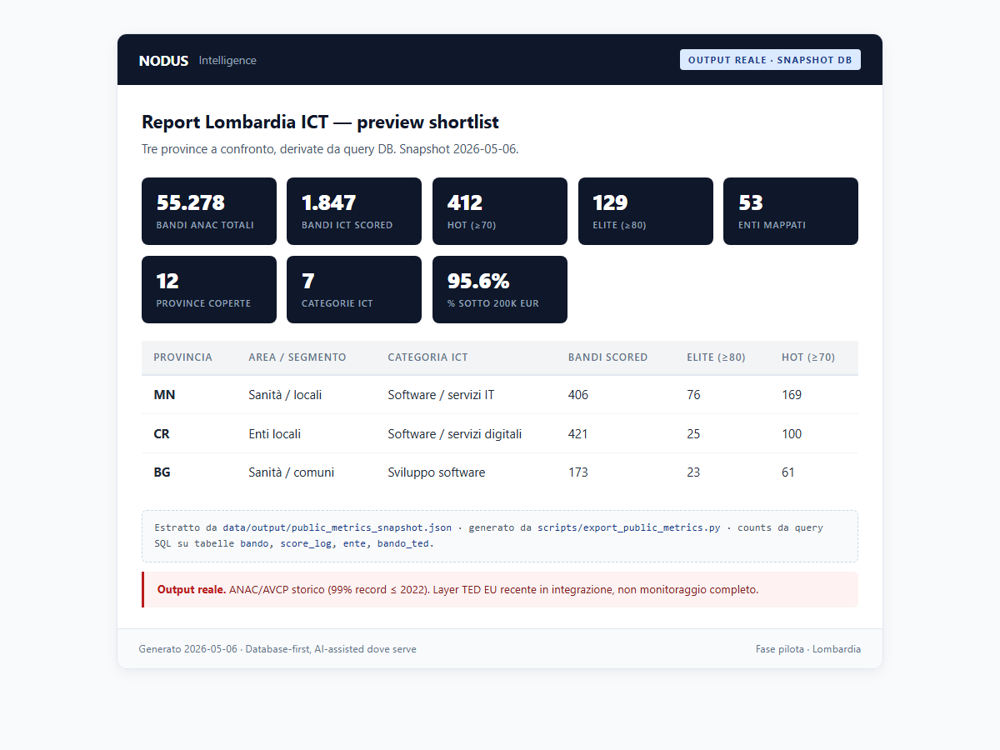
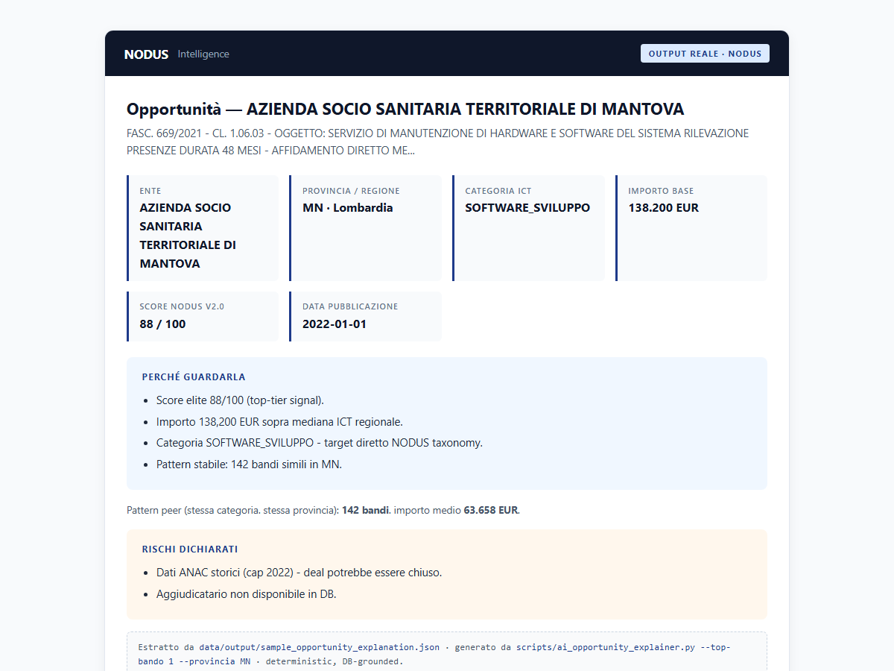

ICT Pre-sales intelligence · PA Lombardia · Fase pilota
NODUS trasforma dati pubblici ANAC/AVCP sugli acquisti ICT della PA lombarda in una shortlist operativa: enti, province, categorie e segnali utili per decidere dove concentrare il lavoro commerciale.
Base storica ANAC/AVCP per leggere i pattern · Layer TED EU recente come segnale aggiuntivo
Il problema
NODUS aiuta a passare da archivi pubblici dispersi a una prima lista di enti, province e categorie ICT da valutare.
53 enti in 12 province lombarde. Cercarli uno per uno costa ore di lavoro.
I dati ANAC ci sono, ma non sono organizzati per categoria ICT né filtrati per rilevanza commerciale.
Senza un punto di partenza, il lavoro commerciale verso la PA procede a intuito.
Cosa facciamo
Ricevi una shortlist filtrabile e una sintesi leggibile: enti, province, categorie ICT, importi, punteggi e note operative. Serve prima dell'ufficio gare, quando devi scegliere quali enti studiare.
Software, infrastruttura, cloud, cybersecurity, telecom, servizi IT, servizi gestiti. Sette categorie, una vista unica.
Calcolato su volume storico dell'ente, importo e concentrazione. Non indica la probabilità di vincere: aiuta a ordinare dove guardare prima.
Filtra per provincia, ente, categoria ICT e fascia di importo. Pensato per chi deve decidere chi contattare.
Top enti per categoria, pattern di acquisto e note operative. Da condividere col direttore commerciale.
I numeri
Snapshot del database NODUS · fonte: archivio ANAC/AVCP per la base storica, layer TED EU come segnale recente.
Nuovo segnale: NODUS mappa anche gli affidamenti diretti ICT (1.642 bandi Lombardia, 88,9% degli ICT mappati).
Esempio di output
Tre province lombarde a confronto, lette in pochi minuti.
406 bandi ICT · 76 elite (≥80) · 169 hot (≥70)
Software e servizi IT, domanda ricorrente
421 bandi ICT · 25 elite (≥80) · 100 hot (≥70)
Software e servizi digitali, volume alto sotto-soglia
173 bandi ICT · 23 elite (≥80) · 61 hot (≥70)
Sviluppo software, segnali su servizi gestiti
| Prov. | Area | Categoria ICT | Bandi | Max ≥80 | Alta ≥70 |
|---|---|---|---|---|---|
| MN | Sanità / locali | Software / servizi IT | 406 | 76 | 169 |
| CR | Enti locali | Software / servizi digitali | 421 | 25 | 100 |
| BG | Sanità / comuni | Sviluppo software | 173 | 23 | 61 |
Max ≥80 = priorità massima. Alta ≥70 = priorità alta.
Nell'estratto completo puoi filtrare per provincia, ente, categoria ICT, fascia di importo e anno.
Perché è rilevante: importo sopra la media regionale ICT, categoria ricorrente e 142 bandi simili nella stessa provincia. Non indica una gara attiva: aiuta a capire dove esistono pattern di acquisto.
Esempio storico usato per leggere pattern di acquisto ICT: importo, categoria, score e ricorrenza territoriale.
Come leggerlo: è un segnale storico. Serve a capire comportamento d'acquisto, categorie ricorrenti e priorità commerciali — non a inseguire una gara già aperta.
Output reali
Esempi prodotti dal motore NODUS: una shortlist provinciale e una scheda di lettura su un bando ICT. I numeri derivano da fonti pubbliche organizzate e verificate nel database.


Esempi reali di lettura: enti, categorie e segnali utili per la fase pre-sales.
Affidamenti diretti
Molti acquisti ICT non passano da gare aperte tradizionali. Per un vendor, significa che il lavoro commerciale deve iniziare prima: capire enti ricorrenti, categorie, importi e pattern territoriali.
Rilevazione su dati pubblici ANAC/AVCP storici. Dettagli metodologici disponibili su richiesta.
Per chi è utile
NODUS è pensato per chi vende ICT alla PA e vuole preparare meglio il lavoro commerciale, non per chi cerca solo notifiche di gara.
Se usi già strumenti di gara nazionali, NODUS può affiancarli nella fase precedente: selezione enti, lettura storica e priorità commerciali.
Come funziona
Provincia, categoria ICT o tipo di ente che vuoi valutare.
Una shortlist con enti, categorie, importi, punteggi e segnali utili.
Se il sample è utile, prepariamo un report completo o un dossier su enti specifici. Nessun abbonamento forzato.
Ambito d'uso
NODUS usa una base storica per leggere pattern di acquisto, non per sostituire il monitoraggio delle gare attive. Il valore è capire dove la PA compra ICT con ricorrenza e quali enti meritano attenzione commerciale.
Utile per leggere comportamenti d'acquisto, categorie ricorrenti e priorità territoriali.
Le fonti recenti vengono trattate come segnali aggiuntivi, senza promettere monitoraggio completo.
53 enti in 12 province lombarde. Altre regioni non sono ancora coperte.
Il formato viene validato con i primi interlocutori. Per questo l'estratto iniziale è gratuito.
NODUS parte da fonti pubbliche e le organizza in una lettura operativa: enti, categorie, importi, priorità e segnali da valutare. La tecnologia aiuta a ridurre il rumore; i numeri restano controllabili e collegati alle fonti.
Scrivimi su LinkedIn indicando provincia, categoria ICT o tipo di ente che vuoi valutare. Ti mando una shortlist sample gratuita.
Scrivimi su LinkedInNessun costo · Nessun obbligo
Preferisci email? Scrivilo nel messaggio LinkedIn e rispondo da lì.